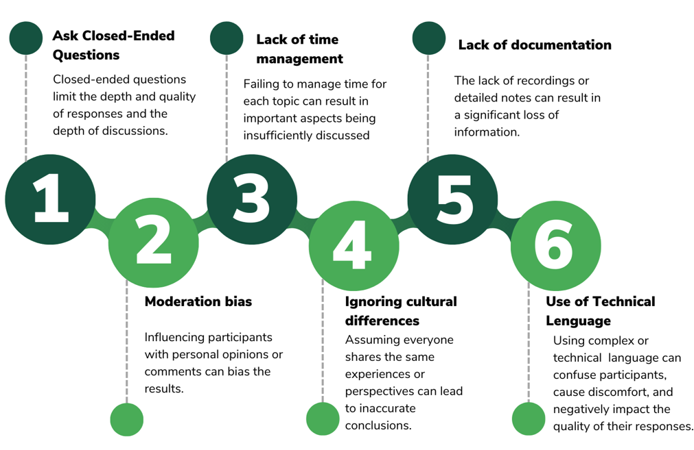

Conducting Focus Groups
Practical guidance for researchers and practitioners on how to plan and conduct focus groups for qualitative data collection in research and evaluation contexts. Covers team structure, moderator skills, logistics, script design, moderation techniques, and managing challenges in both in-person and virtual settings.
- Researchers can use focus groups in quantitative studies to refine surveys, validate findings, explore underlying mechanisms, among others.
- Effective focus groups require skills like cognitive empathy, probing, and self-awareness.
- When in-person focus groups are impossible, you can rely on remote sessions.
What is a focus group?
Focus groups are one of the most widely used techniques in social research, particularly within qualitative studies. This method involves creating a discussion space where participants engage in an in-depth conversation about one or more topics.1 Focus groups represent an artificially configured environment whose main goal is to gather information on the interaction among participants. This includes exploring their perceptions, opinions, and attitudes toward specific topics.2
Unlike individual interviews that capture personal perspectives in isolation, focus groups reveal how opinions form, evolve, and develop through social interaction. They are particularly valuable when you need to understand community norms, examine areas of consensus or disagreement, or explore how people collectively make meaning of experiences.
In a focus group with Venezuelan migrants in Colombia, several common perceptions about the healthcare system emerged. While some participants acknowledged the accessibility of essential medical services as an advantage of the Colombian system, others expressed concerns about the quality of care, long wait times, and challenges in accessing specialized services, particularly due to their migratory status. The group dynamics revealed how participants validated each other’s experiences, creating a more comprehensive picture than individual interviews might have provided.
In a typical focus group, a moderator leads the discussion. This person ensures active interaction among participants. The moderator’s role is to ask questions that stimulate discussion, guide the conversation to gather valuable insights, and build trust with the participants. This trust is crucial to making participants feel comfortable expressing themselves freely, ensuring the discussion remains productive and focused on relevant topics. Focus groups allow researchers to gather data on how participants communicate, share their opinions and experiences, and react to the contributions of others.
Focus group dynamics allow researchers to identify what information participants censor or encourage among themselves.3 Group conversation does not necessarily imply consensus. During the conversation, participants may misinterpret each other’s accounts, question themselves, and attempt to persuade each other.4 Disagreement is also a key component of this collection technique, as it allows exploring the diversity of opinions and the reasons behind participants’ beliefs and attitudes. Overall, focus groups make it possible to identify both shared perceptions and divergences among participants on a specific topic.
Planning a focus group
Proper preparation is essential for the success of focus groups, ensuring that the research activity meets its field data collection objectives. This section provides detailed guidance on the planning steps that should be undertaken before conducting a focus group.
- Structure your team
Ideally, focus group teams should consist of at least two roles: a moderator and a facilitator. The moderator’s primary responsibility is to lead the discussion during the focus group, ensuring that the conversation remains on track and that all participants engage actively. The facilitator handles logistical activities such as setting up recording equipment, providing refreshments and incentives, setting up the space, as well as, taking notes. It is crucial to clearly define and assign these roles in advance to ensure a smooth execution of the focus group.
If budget constraints prevent hiring a facilitator, it is important to recognize that this could negatively impact the quality of the activity and the data collected. Overburdening the moderator with both discussion and logistical duties may compromise their ability to maintain participant focus and engagement. Researchers should be aware of these potential drawbacks when planning qualitative data collection without a dedicated facilitator.
- Recognize the skills of the field team
The quality of data produced during qualitative research activities relates to the skills of the moderator and facilitator. These competencies, outlined in Table 1, enable teams to recognize and adequately represent the diversity within qualitative data. While these skills are typically developed through years of study and practice, field teams often consist of individuals from multidisciplinary backgrounds with varying levels of experience. Regardless of experience level, it is important to review and discuss these skills with your team to identify possible gaps and opportunities for improvement.
Currently, there are no standardized metrics to measure the prevalence of these skills among qualitative fieldwork moderators. Therefore, teams should view the skills in Table 1 as a resource for reference and reflection. Ensuring that everyone on the team understands how these competencies contribute to engaging with the population is essential for collecting high-quality information.
| Skill | Description | Why is this skill relevant? |
|---|---|---|
| Cognitive empathy | The field team’s ability to understand and communicate participants’ situations from their perspectives, understanding how they see the world and their roles within it. | Allows researchers to connect with participant’s realities and experiences. Helps to create a relationship of trust and respect with the participants. Seeks to avoid generalizations and stereotypes that may arise from preconceptions or external influences such as previous studies. Enhances understanding of participants’ situations without resorting to pity. |
| Follow-up | The field team’s ability to recognize when additional information is needed to answer the questions initially posed and those that arise during the research process. This ability implies curiosity and a willingness to explore new issues or doubts that emerge as data collection progresses. | Increases the quality and robustness of data by allowing a more detailed exploration of the studied phenomenon. Contributes to obtaining deeper responses from participants. Enables exploration of emerging themes during data collection. Helps in detecting and validating patterns observed in the field. |
| Self-awareness and reflexivity | The field team’s ability to continuously reflect on how their presence, background, and assumptions influence data collection, interpretation, and analysis. This ongoing self-reflection ensures that the qualitative field team is mindful of its impact on the research process and the participants. | Helps maintain ethics in the researcher-participant relationship. Facilitates understanding of personal limitations in connecting with participants. Aids in developing strategies to overcome communication barriers and create an environment where participants feel comfortable sharing sensitive information. |
| Heterogeneity | The field team’s ability to represent and reflect the diversity within the group being studied. This skill involves recognizing and documenting the differences and variations among individuals or subgroups during qualitative research, typically applied during the data analysis phase. | Contributes to challenging generalized and simplistic patterns. Ensures that data reflect both common and atypical experiences. Demonstrates the field team’s ability to identify, recognize, and document heterogeneity in the population studied. |
| Palpability | The field team’s ability to provide detailed descriptions in their field notes or diaries, making the data tangible and clear. This involves avoiding abstract descriptions and, instead, offering vivid accounts that allow the research team to visualize and understand participants’ experiences and contexts. | The palpable field notes and diaries are accompanied by textual quotations, images, or other audiovisual resources that show events, situations, and actors that support the research findings. Reliable findings are supported by specific details that clearly depict the events and situations studied. Helps to avoid abstraction in the data, grounding conclusions in concrete evidence. |
- Plan the logistics of your focus group
Logistical activities are important to ensure the correct implementation of focus groups. Careful logistical planning ensures that all necessary elements are in place to carry out the activities, participants receive timely scheduling, and all fieldwork details remain clear. Based on the experience of conducting qualitative field operations in various contexts, the IPA Colombia team has identified several key practices that are essential for the logistical preparation of a focus group:
Schedule activities and participants at least one week in advance. Send reminders before the activity.
During scheduling, tell participants about the objective, scope, leading organization, and confidentiality of the focus group to align expectations and avoid confusion.
Verify the location and conditions of the meeting site. Remember that it is important to schedule a place whose location does not pose a risk to the participants or the team.
This place should have the necessary furniture (chairs and tables) so that participants feel comfortable and can interact with each other.
Ensure you have all the necessary materials for the session. This includes incentives (if applicable), refreshments/snacks, attendance list, recording equipment, and batteries.
Test the audio equipment in advance to ensure clear recording and facilitate the group dynamics.
Have a note-taking strategy to: identify topics not recorded in the audio, capture nonverbal interactions among participants, and document the session in case participants do not consent to recording. The facilitator supports this task.
It is worth noting that there is no particular order/progression to these activities. We suggest the sequencing presented above, though it may change according to the context in which you conduct the focus groups. The listed activities exclude logistical tasks that the field and research team had to undertake to ensure the feasibility of conducting research activities, such as guaranteeing a space, contacting leaders, purchasing materials, etc. You should make a comprehensive list of the critical aspects to ensure the success of your qualitative data collection at different levels. As fieldwork approaches, consult the issues previously mentioned.
- Design and study the script
The discussion script is a support tool that seeks to guide the conversation during the focus group according to the research objectives. It contains open-ended questions and topics designed to encourage reflection and discussion. You should study the script several times before the activity so that you will be able to explore new topics without losing sight of the objectives of the session. During this process of studying the script, identify:
- The objective of the research activity.
- The logical order of the focus group guide.
- Possible words or expressions that may confuse the participants so that you have time to change them to more understandable ones.
When you know the topics to explore in detail, the script serves as a reminder during the talk. This allows more flexible and deeper conversations while maintaining focus on research objectives.
In addition to understanding the script, the facilitator must also understand the research questions of the project. This will allow them to probe beyond the guide and see, during the execution of the activity, possible questions or dimensions of the problem that were not known when the script was developed.
Conducting a focus group
When initiating a focus group, always start by introducing yourself, explaining the role of each member of the work team, and the overall dynamics of the session. Read the informed consent, ensuring all participants clearly understand the purpose of the activity and the potential risks and benefits of their participation. During this process, emphasize the confidentiality and anonymity of the information collected during the focus group. The moderator should explicitly obtain the participants’ authorization to record the session. Throughout the activity, create a comfortable and calm environment that allows participants to express their opinions freely and without censorship. To maintain a favorable atmosphere, show interest, cordiality, and respect for all interventions. Maintain an attitude of curiosity, even when topics extend beyond the planned scope or when opinions differ from yours.
Being an effective moderator
Table 2 presents key principles to moderate focus groups. 5 The moderator plays a key role guiding the discussion, ensuring equal participation from all members, and keeping the conversation focused on relevant topics. An effective moderator facilitates a smooth and natural discussion, creating an environment where participants feel comfortable and safe to express their opinions openly, without fear of criticism or judgment. The moderator also manages potentially challenging group dynamics, ensuring that all participants have equal opportunities to contribute, and preventing any one participant from dominating the conversation. Other key responsibilities of an effective moderator include:
- Ensuring the recording equipment works throughout the activity.
- Taking comprehensive notes on the entire activity, particularly focusing on participants’ interactions and nonverbal reactions.
- Ensuring that the seating arrangement of the participants is appropriate for effective communication.
- Providing logistical support to the moderator by delivering refreshments and incentives (if applicable) and attending to the specific needs of participants, such as assisting visually impaired individuals or accommodating participants with children.
- Supporting the moderator in managing the session’s timing.
| Activity | Description |
|---|---|
| Show interest in participants | As a moderator, show respect and genuine interest in each participant’s contributions. Recognize that everyone has valuable knowledge, regardless of their education level, experience or background. Acknowledge contributions with expressions such as “Thank you for sharing that†or “That is an interesting point.†Address participants by their first name or their chosen pseudonym. |
| Avoid assumptions | Do not assume that the concepts or ideas expressed by the participants are clear. Avoid taking for granted the meaning of any idea, concept, or expression. For example: In a focus group with Venezuelan migrants, the expression “chamo†comes up. If you do not know this word, you should ask the participants directly what they are referring to with that word. |
| Generate empathy with participants | Generate an empathetic connection with focus group attendees. This helps them feel safe and valued when sharing emotions and experiences. A non-judgmental environment helps participants feel more comfortable speaking openly. Repeat or summarize participants’ comments to show that you understand their perspectives. Be patient. Do not rush the answers. Allow participants to take their time to think and respond. |
| Be a moderator, not a participant | The moderator’s role is to guide the conversation, not to be part of it or share personal views. Some moderators assume that sharing personal experiences will encourage a greater exchange of ideas among participants. However, this practice can induce bias and affect the conversation’s overall flow. |
| Be prepared to listen to different opinions and control your reactions | The moderator is not impartial, no matter how hard they try. It is important to identify your own biases and seek to contain personal assessments of the various opinions that may come from the participants. Avoid making value judgments about the testimonies and responses of the attendees. Be mindful of your reactions. Even small responses like nodding or giving short positive feedback such as “I think so too†or “You are right†can inadvertently influence the discussion. These reactions can induce social desirability bias, potentially altering the participants’ responses and the overall dynamics of the discussion. |
| Use your talents | Identify your talents and use those that build trust and encourage conversation among participants. Make a list of your skills and talents. Think about what you do well and how these talents can be useful in the context of a focus group. |
| Ask follow-up questions | Asking follow-up questions allows for a deeper exploration of participant’s responses. This is essential to understand not only what people think, but why they think the way they do. |
Potential challenges during a focus group
There are situations that could take place during a focus group that you should be prepared for. Here are some examples:
Managing emotions can be one of the most complex challenges during a focus group, especially when discussions touch on intense or personal topics. Allow participants to express their emotions, but guide them constructively. Ask how they feel and why, and look for ways to channel those emotions into the discussion. If a person is emotionally affected by an event, ask them if they wish to continue the activity and remind them that participation is voluntary. If emotions disrupt the session, take a short break and show understanding and support. In accordance with research protocols, provide relevant mental health care resources that may be useful for the participants. If the focus group sessions address sensitive issues, the field team should have a course or training on psychological first aid.
Some participants may not agree with the recording of their testimonies. If this happens, consider the following recommendations. If this is the case, emphasize confidentiality, anonymity, and privacy of the data. Remind participants that during the analysis of the information, no personal data of any participant will be added. If you do not obtain authorization to record the session, take notes on topics of conversation, interactions between participants, and other relevant data.
While deviations from the central theme can sometimes provide valuable insights, steer the conversation back to the research objectives when it strays too far. During the participants’ interventions, ask follow-up questions that allow you to close the ideas and/or redirect them to the research objectives.
Occasionally, some participants may attempt to dominate the discussion, overshadowing more reserved participants. Set ground rules at the start of the session regarding the length of contributions. Identify strategies for asking participants to close their ideas when they are too long. For example, you can use an eye-catching object like a signaling paddle to get participants to finish their contributions.
Some participants are too shy to participate or get pushed aside by those who seek to dominate the conversation. In these cases, you must control the situation so everyone can join the conversation. Use “icebreaker†activities at the beginning of the session in which everyone participates. Directly address less active attendees with open-ended questions that encourage them to express their thoughts.
Some topics may have one side polarization on the group discussion, leading to an “excessive consensus†where some participants may hesitate to contradict the dominant view on certain topics. This can limit the diversity of perspectives and affect data quality. Emphasize that all viewpoints are valuable and that there are no right or wrong answers. Divide the group into smaller subgroups to discuss certain topics, then reconvene to share different perspectives. Limit speaking time to prevent any one participant from monopolizing the discussion. If the conversation becomes hostile, remind the group of the activity’s purpose and, if necessary, pause the session.
Frequent mistakes during moderation
When conducting focus groups, it is important to avoid common mistakes that can compromise the effectiveness of the session and the quality of the collected data. Some of the most critical mistakes are described here:

After the focus group
The focus group session ends when all research topics have been covered and no new data or relevant information is obtained; the research objectives have been achieved, collecting the quantity and quality of data needed to answer the research questions, or when time and resources have reached their limits. To close the work session, it is recommended to (i) offer space for reflection in which participants can express comments, suggestions, or questions about what happened in the focus group; (ii) thank the participants for their time and willingness to participate, emphasizing that the opinions and information provided are of great importance for the study or research being conducted; and (iii) close the data flow, prioritizing the safe storage of the recording of the research activity. Some of the moderator’s responsibilities in this phase include:
- Support data flow closure and secure storage of information.
- Provide the notes taken to the moderator.
- Ensure that all equipment used (tape recorders, computers, microphones, etc.) is complete.
At the end of the focus group, document the information obtained in detail. The lack of initial documentation products risks all information processing components and, thus, the quality of the obtained data. How this documentation is done is a decision linked to the research design and is determined before fieldwork begins. Record information as soon as the focus group concludes to prevent the loss of crucial details. This immediate action is vital to the research process. In addition, the products derived from the focus group must follow information storage protocols, which may include anonymization and encryption to avoid compromising the confidentiality of participants. Examples of products you can use for this purpose are:
- Full transcripts of the discussions
- Detailed notes taken during the research activity
- Field notes
- Field diaries
Online focus groups
Virtual focus groups are a viable alternative when in-person sessions are impossible due to factors like distance, time, or budget constraints. While the virtual format shares many characteristics with in-person focus groups, including preparation and moderation activities, it also presents unique challenges that require specific attention.
Potential challenges of online focus groups
Virtual settings can reduce interaction due to participants’ inability to read body language and challenges in responding in real time. Adapt icebreakers to virtual environments. Use activities that promote group dynamics and interaction. Encourage people to keep their cameras turned on. Try to schedule fewer participants to focus attention on the attendees. Manage short conversational scripts as virtual environments may limit direct communication, which could result in skipping sections and/or questions.
Connectivity issues may cause partial or complete interruptions in participants’ involvement. Validate participants’ internet connection before scheduling. Provide necessary support, such as data recharges, to ensure participation. Avoid imposing any costs on participants for participating.
Some participants may struggle with connecting to and navigating the chosen platform due to unfamiliarity with digital tools. During the scheduling, offer training on how to use the platform on which the activity will be carried out, for those who need assistance.
Some participants may take the video call in shared spaces. This situation may place participants in uncomfortable or risky situations, depending on the sensitivity of the topics. During the scheduling, ask the participants directly where they will take the interview, who might listen to you, and if they feel safe having the interview under these conditions. Based on the above, assess whether certain people should participate in the study under these conditions. If people cannot find a private space and sensitive or confidential topics are handled, we recommend not including that participant in the focus group. Evaluate interviewing this person in a different setting.
Participants may become distracted by other duties or social media during the session, affecting their concentration and participation. Suggest that people have their cameras turned on. Emphasize the need for full attention and engagement during the session.
Prolonged screen time can lead to fatigue, affecting the focus and energy of both moderators and participants. Schedule breaks during long sessions. Limit the duration of each session to a reasonable time, approximately one hour. Plan multiple sessions if needed.
A Practical Guide for Conducting Focus Groups
The content in this resource comes from IPA Colombia’s “Practical Guide for Conducting Focus Groups†(see PDF document below). This practical guide provides an overview of how to conduct focus groups for qualitative data collection in the context of public policy design and evaluation of social programs. The guide includes a definition of this specific data collection technique, the purpose and benefits of using this technique, recommendations and steps-by-step instructions for implementation, and real-world applications.
Footnotes
Kitzinger, J. (1999). Qualitative Research: Introducing focus groups. BMJ, 311, 299-302. https://doi.org/10.1136/bmj.311.7000.299↩︎
Kitzinger, J. (1994). The methodology of focus groups: The importance of interaction between research participants. Sociology of Health and Illness, 16(1), 106.↩︎
Kitzinger, J. (1994). The methodology of focus groups: The importance of interaction between research participants. Sociology of Health and Illness, 16(1), 110.↩︎
Kitzinger, J. (1994). The methodology of focus groups: The importance of interaction between research participants. Sociology of Health and Illness, 16(1), 110.↩︎
Krueger, R. A. (1998). Moderating focus groups. SAGE Publications.↩︎